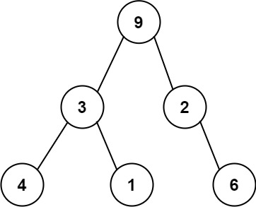

books / company-solutions / Stack
331. 验证二叉树的前序序列化
本题学习状态正在读取学习记录…下次复习：—
按 M 快速切换薄弱标记题目与约束
序列化二叉树的一种方法是使用 前序遍历 。当我们遇到一个非空节点时，我们可以记录下这个节点的值。如果它是一个空节点，我们可以使用一个标记值记录，例如 #。

例如，上面的二叉树可以被序列化为字符串 "9,3,4,#,#,1,#,#,2,#,6,#,#"，其中 # 代表一个空节点。
给定一串以逗号分隔的序列，验证它是否是正确的二叉树的前序序列化。编写一个在不重构树的条件下的可行算法。
保证 每个以逗号分隔的字符或为一个整数或为一个表示 null 指针的 '#' 。
你可以认为输入格式总是有效的
- 例如它永远不会包含两个连续的逗号，比如
"1,,3"。
注意：不允许重建树。
示例 1:
输入: preorder = "9,3,4,#,#,1,#,#,2,#,6,#,#"
输出: true
示例 2:
输入: preorder = "1,#"
输出: false
示例 3:
输入: preorder = "9,#,#,1"
输出: false
提示:
-
1 <= preorder.length <= 104 -
preorder由以逗号“，”分隔的[0,100]范围内的整数和“#”组成
核心不变量
把序列化看作「填空槽」：初始有 1 个待填槽位；非空节点消耗 1 个槽位又产生 2 个（净 +1），空节点
#只消耗 1 个（净 -1）；合法序列要求遍历过程中槽位一旦归零就不能再有节点，且最终槽位恰好为 0。
完整推导
思路推导
- 把问题翻译成「填空槽」
一棵二叉树的每个节点都"需要被填进一个槽"。整棵树只有一个根，所以一开始只有 1 个槽位等着被填。
- 两种节点对槽位的不同影响
- 填入一个非空节点：它占掉这 1 个槽，同时自己又长出左、右两个子节点的槽位，所以槽数变化是
-1 + 2 = +1。 - 填入一个空节点
#：它占掉这 1 个槽，但没有孩子，槽数变化是-1。
- 判定规则（两个条件缺一不可）
- 遍历过程中，一旦槽位变为 0，就不能再出现任何 token（说明根已被填满，多余的节点无处安放）；
- 遍历结束后，槽位必须恰好为 0（所有槽都填满，既不能有剩、也不能欠）。
- 小例子手推
"1,#"：1后槽数2，#后槽数1，结尾非 0 →false（左子树空着）。"9,#,#,1"：9→2，#→1，#→0，此时槽已空却还剩1→false。- 示例 1 的 13 个 token 走完，槽数正好回到 0 →
true。
Java 实现（isValidSerialization）
class Solution {
public boolean isValidSerialization(String preorder) {
String[] tokens = preorder.split(",");
int slots = 1; // 根节点占用的 1 个槽位
for (String token : tokens) {
if (slots == 0) {
return false; // 槽位已耗尽却还有节点，非法
}
if (token.equals("#")) {
slots -= 1; // 空节点消耗 1 个槽位
} else {
slots += 1; // 非空节点：消耗 1 个、产生 2 个，净 +1
}
}
return slots == 0; // 结束时所有槽位必须填满
}
}
C++ 实现
#include <string>
#include <sstream>
class Solution {
public:
bool isValidSerialization(std::string preorder) {
int slots = 1; // 根节点占用的 1 个槽位
std::stringstream ss(preorder);
std::string token;
while (std::getline(ss, token, ',')) {
if (slots == 0) return false; // 槽已耗尽却还有节点
if (token == "#") slots -= 1; // 空节点消耗 1 个
else slots += 1; // 非空节点净 +1
}
return slots == 0;
}
};
Python 实现
class Solution:
def isValidSerialization(self, preorder: str) -> bool:
slots = 1 # 根节点占用的 1 个槽位
for token in preorder.split(','):
if slots == 0: # 槽已耗尽却还有节点
return False
if token == '#':
slots -= 1 # 空节点消耗 1 个
else:
slots += 1 # 非空节点净 +1
return slots == 0
复杂度
- 时间：O(n)，每个 token 处理一次，
split也是线性扫描。 - 空间：O(n)，
split得到的 token 数组；若用手写扫描器逐字符读取，可降到 O(1) 额外空间。
易错点与扩展（面试高频考点）
- 中途提前归零必须判非法：只在最后检查
slots == 0是不够的。像"9,#,#,1"会在中途把槽用完，必须循环内就return false。 #用equals而不是==：Java 里字符串比较必须用equals，==比较的是引用。- 另一种等价解法——栈消去：用栈模拟，遇到数字压栈；遇到
#时若栈顶已是#则不断弹出两个#并压入一个#（把"#, #"折叠成一个空位）。遍历完栈中应恰剩一个#。本质与槽位法相同。 - 不要真的去建树：题面明确禁止重建，槽位法/栈法都只用一个计数器或一个栈，天然满足。
- 边界：单节点
"#"是合法的（空树），返回true；"1"非法（非空节点还有两个空槽没填）。